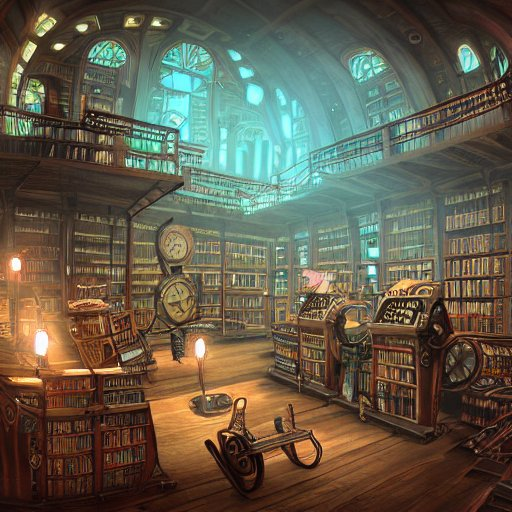
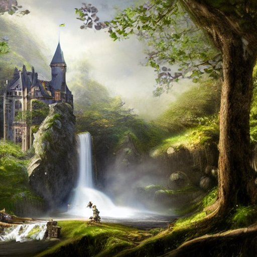
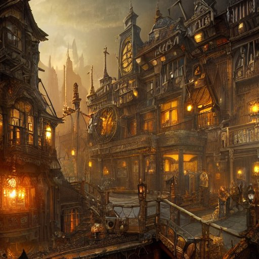
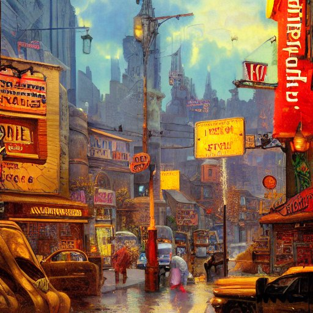
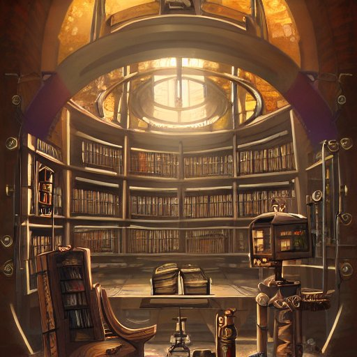
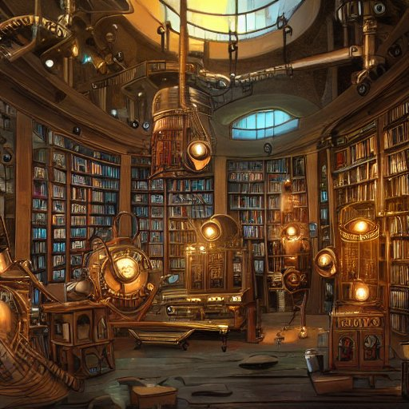
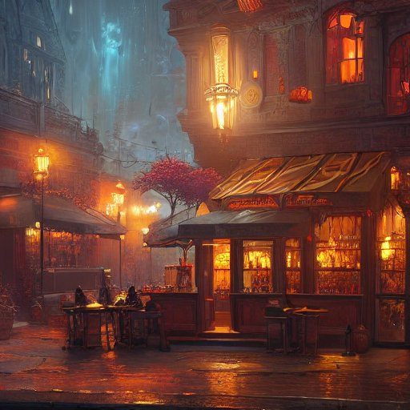
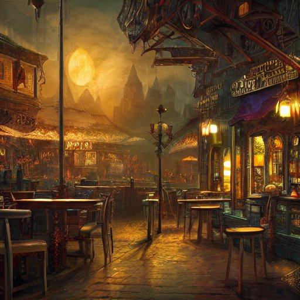

ESPACIO VIALE
Espacio Viale es tu destino perfecto para la belleza natural en Villa Devoto, Ciudad Autónoma de Buenos Aires. Como un vivero atendido por su dueño, ofrecemos una amplia selección de plantas de todo tipo, flores, especias, árboles y decorativas. Además, nuestro equipo experto se especializa en arreglos y decoración de balcones, jardines y jardines de invierno. Descubre la magia de la naturaleza en Espacio Viale y transforma tu entorno en un paraíso verde

AMBIENTACIONES Y JARDINERIA DE DISEÑO
Nuestro equipo de expertos se dedica a la ambientación con plantas en balcones, jardines y espacios verdes, transformando tus áreas comunes o de trabajo en oasis de tranquilidad y belleza. Ya sea que busques un toque de naturaleza o una decoración impresionante, confía en nosotros para hacer realidad tus sueños verdes

What is the future of web design?

There is no one answer to this question. The future of web design will be determined by the needs and wants of web users and the technology available to web designers.

LEARN MORE

The future of art is digital
The future of art is digital. No longer restricted by the traditional mediums of painting and sculpture, artists can now create entire worlds with a few clicks of a button.
In the past, creating a work of art was a laborious process, often taking weeks or even months to complete. But with digital art, the process is much faster and more flexible. Artists can create multiple versions of a work, experiment with different colors and textures, and make changes on the fly.
Digital art is also more interactive than traditional art. Viewers can explore it from all angles, and even interact with it directly. Some digital artworks even allow viewers to contribute their own creative input.
With the ever-growing popularity of digital art, it's clear that this is the future of the art world. So what does that mean for traditional artists? Only time will tell. But one thing is for sure: the future of art is digital.
LEARN MORE
LEARN MORE
In the past, creating a work of art was a laborious process, often taking weeks or even months to complete. But with digital art, the process is much faster and more flexible. Artists can create multiple versions of a work, experiment with different colors and textures, and make changes on the fly.
Digital art is also more interactive than traditional art. Viewers can explore it from all angles, and even interact with it directly. Some digital artworks even allow viewers to contribute their own creative input.
With the ever-growing popularity of digital art, it's clear that this is the future of the art world. So what does that mean for traditional artists? Only time will tell. But one thing is for sure: the future of art is digital.
En Espacio Viale, te ofrecemos una exquisita variedad de flores de estación, así como plantas decorativas de todos los tipos. Desde coloridas flores que iluminarán tus espacios durante cada estación del año hasta plantas exóticas y decorativas que añadirán elegancia a tu hogar, encontrarás la selección perfecta para tus necesidades de jardinería y decoración



About
Artificial intelligence (AI) is a field of computer science that deals with the creation of intelligent agents, which are systems that can reason, learn, and act autonomously.
The term "artificial intelligence" was first coined by computer scientist John McCarthy in 1955. McCarthy defined AI as "the science and engineering of making intelligent machines."
AI research deals with the question of how to create computers that are capable of intelligent behaviour.
The term "artificial intelligence" was first coined by computer scientist John McCarthy in 1955. McCarthy defined AI as "the science and engineering of making intelligent machines."
AI research deals with the question of how to create computers that are capable of intelligent behaviour.
A photo gallery is a collection of photographs, either in physical form such as a book or on a website.
A photo gallery is a collection of photographs, either in physical form such as a book or on a website.
